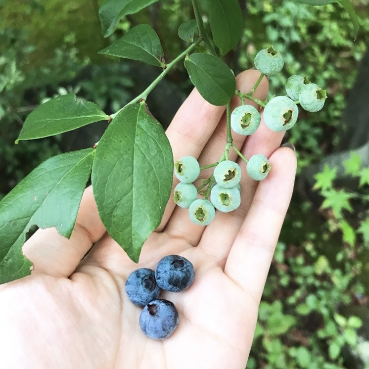

ブルーベリー合戦
2019.08.25 伊藤
小学生時代、休み時間はいつも教室待機。
「静かそうだね。」といわれ続けてきた私が、実は放課後，野山に出向き、泥だらけになって帰宅していたことを知る友人は数少ないと思います。
そんな私ももう大学２年生。自然が好きな子だから大学は理系に進学するだろう。と考えていた両親の考えとは裏腹に、文系の大学に進学し、自然とかけ離れたことを学んでいます。
前置きが長くなりました。
東京大学Agrlienでブログが始まり、いざ自分の当番が回ってきた今、農業の知識も何もない私が何を書いたら良いのかとても悩みましたが、
今回は私が実家で、溺愛しているブルーベリーと過ごす生活を書いてみようと思います。

夏休み・冬休み・春休み・大学が長期休暇に入り、実家に帰省すると同時に
私のブルーベリー生活が始まります。
ブルーベリーとの生活はわくわく感と共にこの季節が来たという覚悟も湧いてきます。
なぜブルーベリーとの生活に覚悟がいるのか。
私の場合ひとつでも多くのブルーベリーを鳥から守り、ブルーベリージャムの材料に当てたいから。
というとても単純な考えがあるからです。
ブルーベリージャムの材料確保をしたい私VS命をつなぎたい鳥
ブルーベリーの実が付き始めたばかりのとき（上）とまだ赤くなっていないとき（下）は
私と鳥は冷戦状態で、ブルーベリーに関してはお互い安心して過ごせているはずです。
いよいよ実も赤くなり始めると、鳥も本気を出し、戦いが始まります。
もちろん戦いの結果は鳥より大きい私が圧勝です。
といいたいところなのですが、ほぼ鳥に負けます。
あれ…実がない（写真もない…）
朝からものすごくショックを受け、水やりをしたり、肥料をまいたり今までの私の努力が…
と悲しくなり、同時に今年も美味しい実がなったのだなと嬉しく感じます。
こんな生活を小学生の頃から続けています。
ブルーベリーに限らず家庭菜園をしていると、野菜や果物に愛着が湧き、毎日手間をかけて育てるからこそ、育てた達成感を味わえます。
家庭菜園で野菜や果物を収穫すれば、どこよりも新鮮な野菜を家で堪能することができるはずです！ 苦手な野菜の好感度もUPするかも！？
自然離れが進む現代において身近に自然の生きる力を感じられる
“家庭菜園”始めてみませんか？
子どもに食の素晴らしさを
edible schoolyard（エディブルスクールヤード）http://www.edibleschoolyard-japan.org/
←クリック という活動もあります。食育に興味がある方はぜひ見てみてください：）
以上、私のブルーベリーとの生活でした。
最後まで読んでくださり、ありがとうございます。